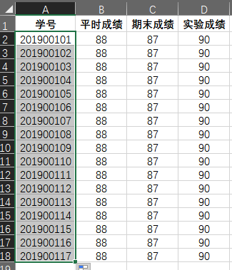
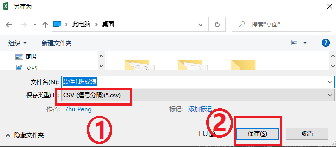
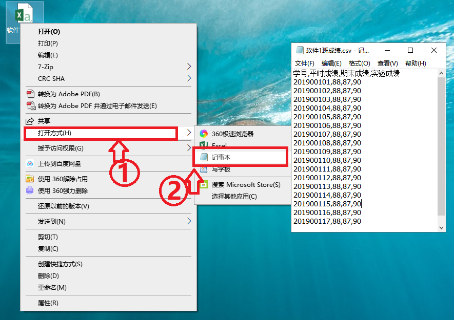
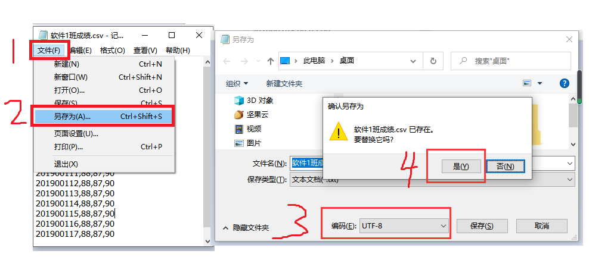
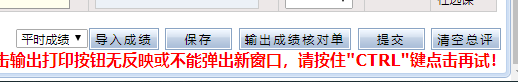

广科教务成绩录入助手
这是一个辅助广东科技学院教务管理系统导入学生成绩的插件。教务系统入口： http://61.142.33.204/
使用说明
1、通过Excel准备好一个包含“学号”“平时成绩”“期末成绩”“实验成绩”的四列表格(ABCD四列的顺序不能乱，不能空列)，没有数据的单元格填“0”如下图所示：
2、通过Excel的“文件”——“另存为”菜单，将做好的成绩表保存”为“CSV(逗号分隔)(*.csv)”文件
3、用记事本工具打开刚刚保存的CSV文件，通过“文件”——“另存为”菜单,在打开的“另存为”对话框中的“编码”下拉列表中选择“UTF-8”,单击“保存”即可 
4、直接在新打开的教务系统成绩登记页面的最下方，先选择“成绩类型”，再选择刚才保存的“成绩文件”，即可。
5、请再核对一遍成绩数据，确认无误后，“提交”即可。